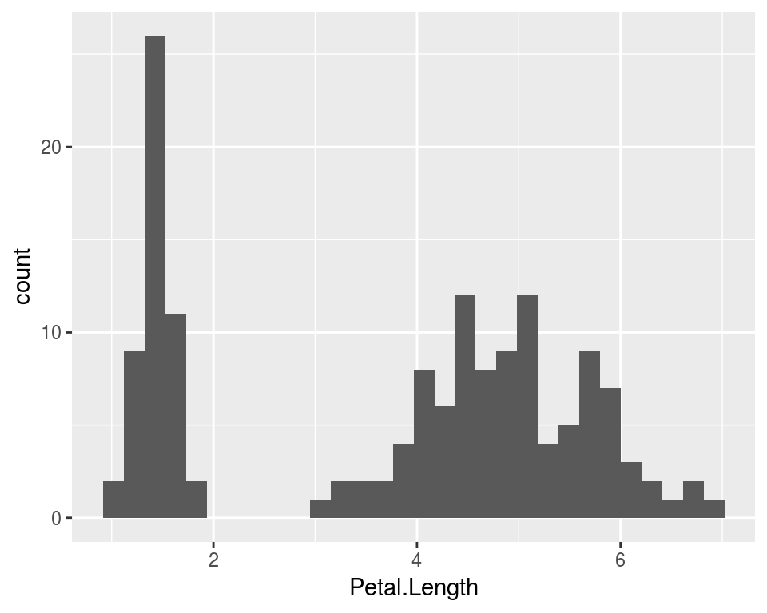
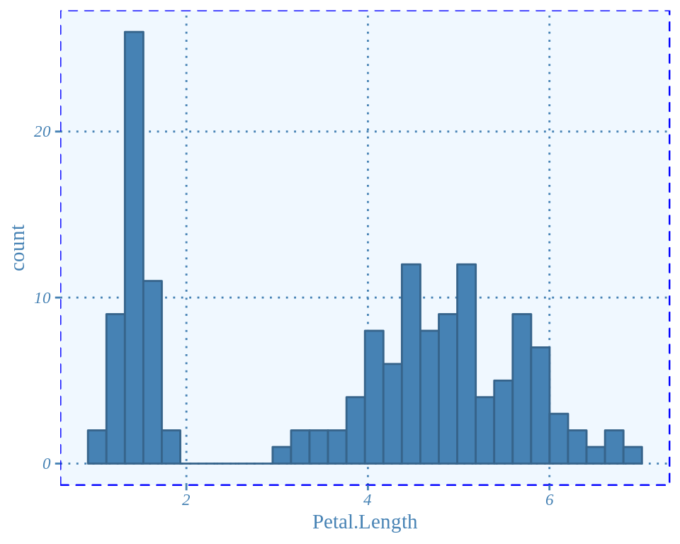
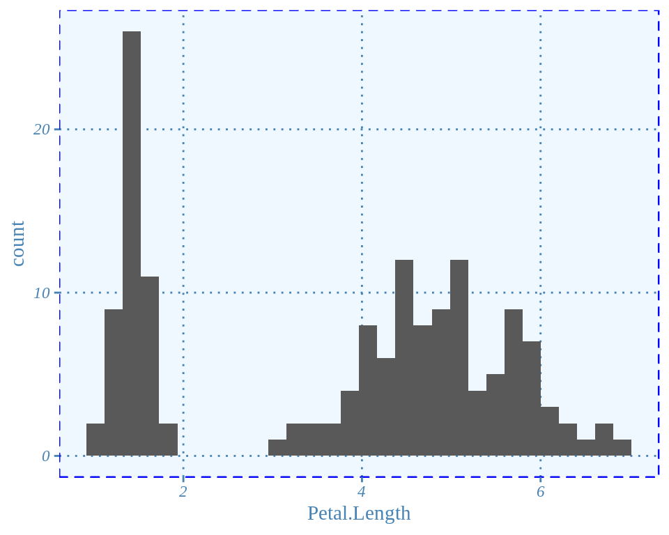

ggplot2Plots created with ggplot2 have a fairly distinctive default look with grey background and white gridlines. It is possible to change it by using the different themes available inggplot, but still sometimes there are some default options that we always want to get rid of and that every time we need to specify.
In these cases I feel the need to customise the output to the point that I’d better just create my own theme! In this post I am going to give an example of how to create your own theme.
ggtheme functionWhen we want to change the default theme, for example to the black and white theme, we just add at the end of the plot theme_bw(). So basically a theme is just a function with a number of arguments set by default, such as background color, size and style of axis text and labels, legend, etc.
Text style, legend, labels, background color, etc, are specified in the function theme(). Hence in order to create our own one, it is enough to define a function my_theme that calls the generic theme() function and where we define all the parameters as we like.
Let us start with a nice default ggplot2 plot. For instance, we consider the usual iris dataset and we plot a histogram of Petal.Length:
require(ggplot2)
data(iris)
ggplot(iris, aes(x = Petal.Length)) +
geom_histogram() 
Suppose that, for the presentation we are giving we want a blue theme with a light blue background and all blue text. Also we want to modify gridlines and more. For example we want a theme with the following characteristics:
We will call this theme blue_theme. All we will need to do, is identify which arguments of the theme() function allows us to do which things.
If you explore ?theme, you can get a complete overview of all the different arguments. We will use the panel.* arguments for all the things that regard the plot’s panel. So basically (1), (2) and (3). The axis.* arguments will allow to modify axis text, ticks, etc. And legend.position will be used to modify the position at the bottom.
More specifically here is what we use:
blue_theme <- function() {
theme(
# add border 1)
panel.border = element_rect(colour = "blue", fill = NA, linetype = 2),
# color background 2)
panel.background = element_rect(fill = "aliceblue"),
# modify grid 3)
panel.grid.major.x = element_line(colour = "steelblue", linetype = 3, size = 0.5),
panel.grid.minor.x = element_blank(),
panel.grid.major.y = element_line(colour = "steelblue", linetype = 3, size = 0.5),
panel.grid.minor.y = element_blank(),
# modify text, axis and colour 4) and 5)
axis.text = element_text(colour = "steelblue", face = "italic", family = "Times New Roman"),
axis.title = element_text(colour = "steelblue", family = "Times New Roman"),
axis.ticks = element_line(colour = "steelblue"),
# legend at the bottom 6)
legend.position = "bottom"
)
}Now let’s test it on the iris dataset:
ggplot(iris, aes(x = Petal.Length)) +
geom_histogram(fill = "steelblue", col = "steelblue4") +
blue_theme()
You may have notice that in our theme we modified the plot’s look but we did not modify the colour of the bins. We changed it when we created the plot as we always do with ggplot.
I looked into it for a fair bit of time, but I did not find a good way to do. I found the update_geom_defaults() function but it seems to me that it does not work exactly the way I would assumed.
I assumed there would be a function to change the default colours, such as update_geom_defaults() and then there was another one to revert back to the default when needed. However, apparently once I change the default colour with the update_geom_defaults(), the new default stay unless I detach ggplot2 and then load it back, or I have to manually set back the default colours.
So for instance, suppose we want to change the default darkgray bins of the histogram into steelblue. I could first save the original default colours:
old <- ggplot2:::check_subclass("bar", "Geom")$default_aes
old## Aesthetic mapping:
## * `colour` -> NA
## * `fill` -> "grey35"
## * `size` -> 0.5
## * `linetype` -> 1
## * `alpha` -> NAold is a list that contains all the default specificatio for the aesthetics in ggplot2.
In order to modify the default colours and, for instance, alpha, in all of the upcoming plots we can run the following:
update_geom_defaults("bar", list(fill = "steelblue", alpha = 0.6, colour = "blue"))then we could run our plot without having to specify the colours:
ggplot(iris, aes(x = Petal.Length)) +
geom_histogram() +
blue_theme()However now the default colours have been permanently changed. In fact if we look at the default aesthetics options for bars, they are now different:
ggplot2:::check_subclass("bar", "Geom")$default_aes## $fill
## [1] "steelblue"
##
## $alpha
## [1] 0.6
##
## $colour
## [1] "blue"
##
## $size
## [1] 0.5
##
## $linetype
## [1] 1As we have saved the old default, we can again use the update_geom_defaults() function and assign the options saved in the old object
update_geom_defaults("bar", old)Now, if we run the plot with our new blue_theme() but we do not specify bins colours, we will get the usual old ggplot2 default options:
ggplot(iris, aes(x = Petal.Length)) +
geom_histogram() +
blue_theme()
This post contains an example of how to create a customised theme in ggplot2. This may be useful when you are doing many plots and every time you customise them so that they look the same. It will save you lots of code lines and also lots of error as every time you want to change something to a plot, if you do not have your own theme, you have to go and manually change it for all the plots.
To learn more about all the different things you can custmise in your own theme check out the help for the theme() function.
This article was written by Emanuela Furfaro.